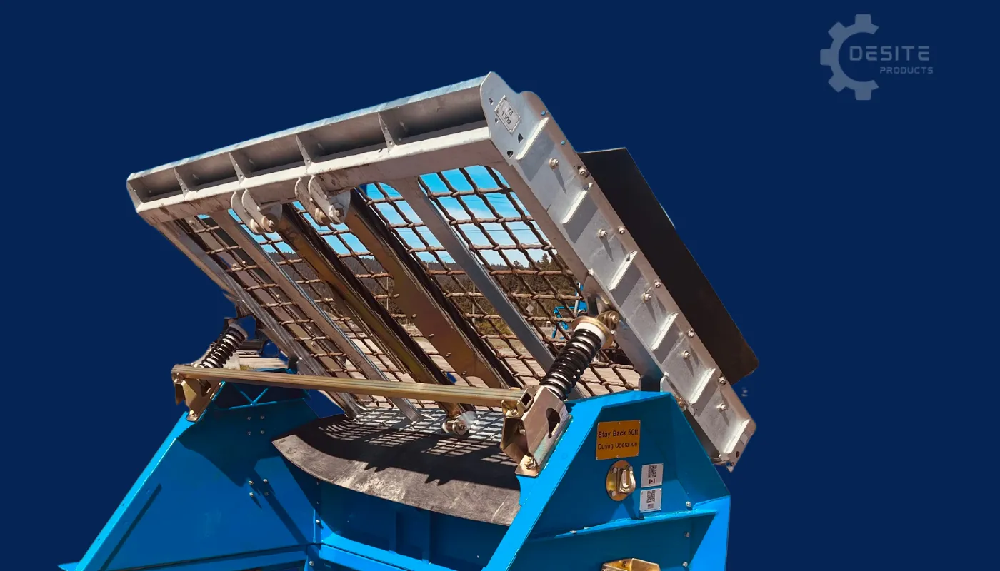
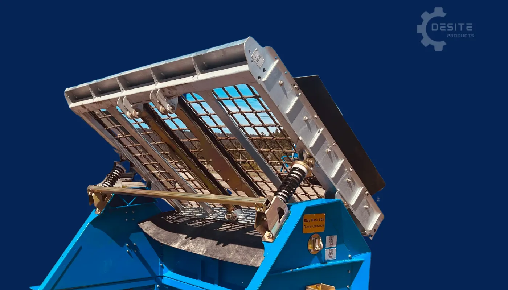

DeSite SLG-78 Static Grizzly
The 68 Pro Screen is specifically designed for subcompact equipment, making it the ideal screener for medium-scale screening operations. With an impressive hourly production capacity of 10 to 20 yards per hour, this screener is built to handle moderate volumes efficiently. It is compatible with buckets ranging from 56 inches to a maximum of 66 inches, providing versatility for various equipment sizes. Additionally, the 68 Pro Screen offers over 10 different mesh options, allowing you to tailor the screening process to your specific material needs.

See It In Action
Product Description
The SLG-78 Static Grizzly is specifically designed for handling aggregate materials, making it the perfect solution for tough jobs that demand durability and precision. Built with the ruggedness of a traditional Grizzly screener but enhanced with the precision of mesh screening, this screener ensures that the final product meets your exact specifications.
This robust screener offers low maintenance operation and is built to last. The static design eliminates the need for electrical power while still delivering reliable screening performance for aggregate applications.
Perfect for skid steers, bucket tractors, mid-size excavators and compact loaders. Professional grizzly performance without the power requirements.
Key Features:
- Rugged grizzly design for aggregate materials
- No electrical power required - static operation
- Low maintenance operation
- Built to last with 3-year structural warranty
- Tilting screen deck for precise material control
- Spring suspension system prevents clogging
- Quick-change mesh system
- Designed for mid-sized equipment
- Ideal for aggregate processing
- Optional riser box for increased capacity
- Optional bucket transport lugs for easy mobility
Equipment Compatibility
Designed For: Mid-Sized Equipment
Compatible Equipment: Skid Steers, Bucket Tractors, Mid-Size Excavators, Compact Loaders
Specifically engineered for aggregate screening with mid-sized construction equipment.
Specifications
Machine Dimensions
- Machine Width: 95 inches (2.41m)
- Machine Height: 90 inches (2.29m)
- Machine Depth: 74 inches (1.88m)
Screen Deck
- Screen Deck Width: 80 inches (2.03m)
- Screen Deck Length: 52 inches (1.32m)
- Screen Deck Surface Area: 29 sq/ft (2.7m²)
- Screen Deck Tilt Angle: 45 to 30 Degrees
Weight
- Total Weight (with riser box): 2250 lbs (1021kg)
- Total Weight (without riser box): 1750 lbs (794kg)
Mesh
- Available Mesh Options: Multiple grizzly mesh sizes available
- Square Pattern: 2" x 2", 3" x 3", 4" x 4"
- Quick and easily changed mesh system
- Double lock crimp weave for strength and stability
- Optional mesh sizes upon request
Warranty
- Structural Warranty: 3 years
- All parts provided at no cost during warranty period
- Customer responsible for installation and shipping
Assembly
- Comes assembled and ready to use
- Riser box can be installed/removed in under 5 minutes
Screener Features
Tilting Screen Deck
 

The Tilting Screen Deck in the SLG-78 Static is the same advanced system used in our 78VFRB model. This feature allows you to have precise control over the flow of material on the screen deck. By enabling direct contact between your bucket and the screen deck, you can easily move and manage material while keeping the screening process in motion. This system ensures smooth and efficient operation, even when dealing with challenging aggregate materials.
Spring Suspension System


The Spring Suspension System in the SLG-78 Static is designed to facilitate the action and reaction of the screen deck, allowing it to move in a harmonic motion that efficiently drives material across the screen. This movement ensures that your screening process is both precise and fast. Unlike traditional Grizzly screeners where rocks or other debris can often become stuck, the Spring Suspension System helps prevent clogging, making your operation smoother and more reliable.
Riser Box (Optional Accessory)

The Riser Box is designed to boost productivity by allowing you to handle more material, ultimately increasing the efficiency of your screening operations. It also stabilizes the movement of the screener, ensuring smoother and more consistent performance. Equipped with winches and 2-inch straps, the Riser Box can be easily installed or removed in less than five minutes, making it a convenient and practical addition to your equipment.
Bucket Transport Lugs (Optional Accessory)

Like other models in our lineup, the SLG-78 Static offers optional Bucket Transport Lugs. These lugs make transporting and moving the screener as easy and stress-free as possible, ensuring smooth and efficient mobility even in challenging or tight locations. This feature enhances the portability of the machine, making it easier to navigate difficult job sites using your equipment's bucket.
Pricing (Estimates)
⚠️ All prices are ESTIMATES only and subject to change. Prices converted from AUD to NZD (minimum 15% adjustment for exchange rate and local costs).
Complete Assembled Unit. Ex Nelson. Price does not include shipping or delivery. Delivery will be arranged with the purchaser and additional charges may apply depending on location.
Additional Options (Estimates):
- Additional Grizzly Mesh: Approx. $1,035 + GST (NZD)
- Riser Box: Contact for pricing
- Bucket Transport Lugs: Approx. $645 + GST (NZD) pair
Please contact us for current pricing and delivery options to your location.
What Can You Screen?
Aggregate Materials
- ✓ Road Gravel
- ✓ Landscape Stone
- ✓ Decorative Stone
- ✓ Erosion Control Rock
Recycled Materials
- ✓ Ground Asphalt
- ✓ Crushed Concrete
- ✓ Wood Mulch
Note
- Static design - no power required
- Best suited for aggregate applications
- Grizzly-style screening